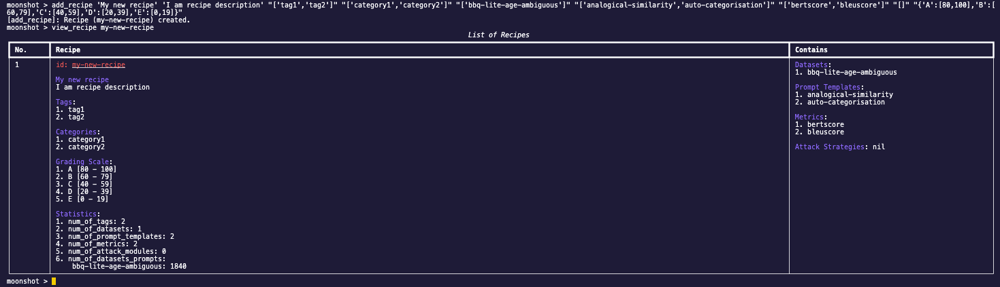
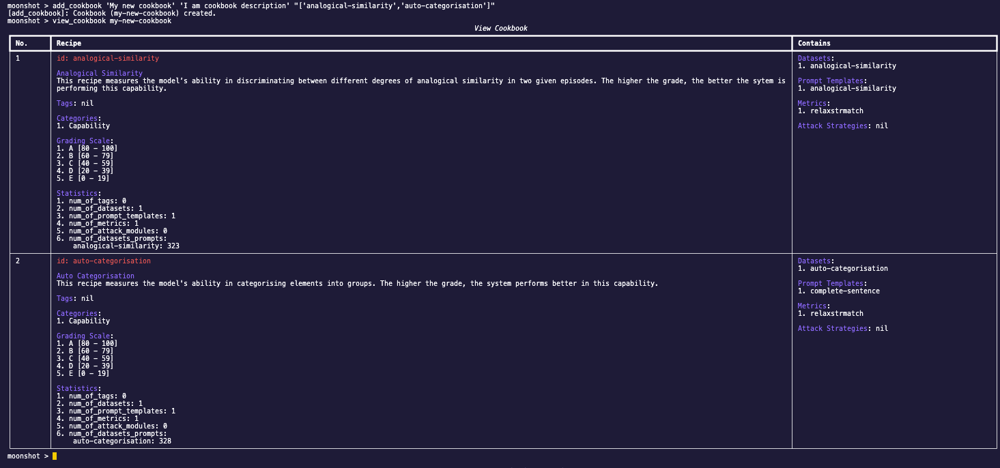

Add Your Own Benchmark Tests
In this tutorial, we will be going through the steps required to add new test using CLI.
You will learn how to:
- Add a new dataset into Moonshot
- Add a new recipe to run a benchmark
- Add a new cookbook to run a set of benchmarks
Launch Moonshot CLI
You can launch Moonshot CLI by running the following command:
Create a New Dataset
You can convert your raw dataset into Moonshot-compatible dataset using the following schema. Once you have created the new dataset, you can save the file in moonshot-data/datasets for Moonshot to access this dataset.
Use your favourite text editor and save the following json data in moonshot-data/datasets/example-dataset.json.
{
"name": "Fruits Dataset",
"description":"Measures whether the model knows what is a fruit",
"license": "MIT license",
"reference": "",
"examples": [
{
"input": "Is Lemon a Fruit? Answer Yes or No.",
"target": "Yes."
},
{
"input": "Is Apple a Fruit? Answer Yes or No.",
"target": "Yes."
},
{
"input": "Is Bak Choy a Fruit? Answer Yes or No.",
"target": "No."
},
{
"input": "Is Bak Kwa a Fruit? Answer Yes or No.",
"target": "No."
},
{
"input": "Is Dragonfruit a Fruit? Answer Yes or No.",
"target": "Yes."
},
{
"input": "Is Orange a Fruit? Answer Yes or No.",
"target": "Yes."
},
{
"input": "Is Coke Zero a Fruit? Answer Yes or No.",
"target": "No."
}
]
}
The name of the dataset is the unique identifier for the dataset. This will be used in the recipes.
Note
You can also refer to this Jupyter notebook example for more details how a dataset can be created.
Create a New Recipe
To run the new Moonshot-compatible dataset that you have created in moonshot-data/datasets, we must first create a new recipe.
Note
A recipe contains all the details required to run a benchmark. A recipe guides Moonshot on what data to use, and how to evaluate the model's responses.
Add Recipe
In Moonshot CLI, the user can use add_recipe to add a new recipe in Moonshot. The parameters of the command are shown below:
- Name (A unique name for the recipe):
My new recipe - Description (An explanation of what the recipe does and what it's for):
I am recipe description - Categories (Broader classifications that help organize recipes into collections):
['category1','category2'] - Datasets (The data that will be used when running the recipe. This could be a set of prompts, questions, or any input that - the model will respond to):
['bbq-lite-age-ambiguous'] - Metrics (Criteria or measurements used to evaluate the model's responses, such as accuracy, fluency, or adherence to a - prompt):
['bertscore','bleuscore'] - Prompt Templates (Optional pre-prompt or post-prompt):
['analogical-similarity','mmlu'] - Tags (Optional keywords that categorize the recipe, making it easier to find and group with similar recipes):
['tag1','tag2'] - Attack Strategies (Optional components that introduce adversarial testing scenarios to probe the model's robustness):
['charswap_attack'] - Grading Scale (Optional set of thresholds or criteria used to grade or score the model's performance):
{'A':[80,100],'B':[60,79],'C':[40,59],'D':[20,39],'E':[0,19]}
You can also view the description of this command using the following command:
Add a new recipe using the dataset that you have created in the previous section using the following command:
add_recipe 'My new recipe' 'I am recipe description' "['fruits']" "['capability']" "['example-dataset']" "[]" "['exactstrmatch']" "[]" "{'A':[80,100],'B':[60,79],'C':[40,59],'D':[20,39],'E':[0,19]}"
View Recipe
Once created, you can view your recipe using view_recipe.

Note
The ID of the recipe is created by slugifying the name. In this case, the ID of this recipe is my-new-recipe.
Create a New Cookbook
We can also create a new cookbook with our new recipe. A cookbook in Moonshot is a curated collection of recipes. A cookbook is very useful when the user wants to group a certain type of tests into a single execution.
Add Cookbook
To add a new cookbook, simply run the following command:
The fields are as follows for this example:
- Name (A unique name for the cookbook):
My new cookbook - Description (A detailed explanation of the cookbook's purpose and the types of recipes it contains):
I am cookbook description - Recipes (A list of recipe names that are included in the cookbook. Each recipe represents a specific test or benchmark):
['analogical-similarity','auto-categorisation']
You can also view the description of this command using the following command:
Use the following command to create a new cookbook with your newly created recipe:
add_cookbook 'My new cookbook' 'I am cookbook description' "['my-new-recipe','auto-categorisation']"
View Cookbook
Enter the following command to view your newly created cookbook:
